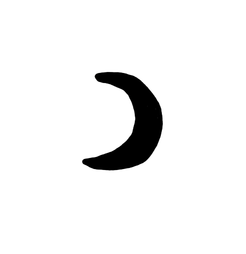

Moon_astec☽
LT:
Automatinis kalbos aptikimas neveikia. Prašome pasirinkti kalbą rankiniu būdu.
EN:
Automatic language detection is not working. Please select your language manually.
Lietuviškai
in English